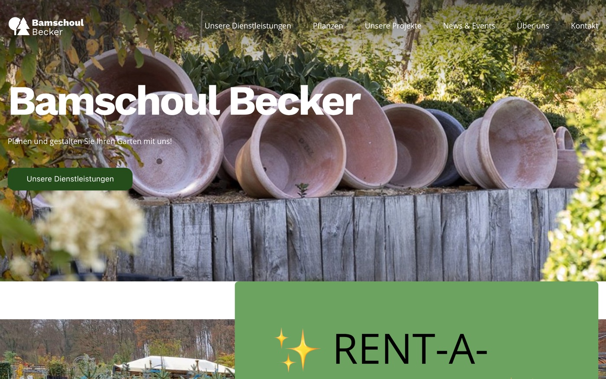

Faire du site web de Bamschoul Becker le 1er apporteur d’affaires paysagères du Luxembourg.
Bamschoul Becker possède un patrimoine exceptionnel : 140 ans d'histoire, 12 hectares à Steinsel, un savoir-faire paysager de référence et un service unique de sapins vivants. Pourtant, le site web actuel ne reflète pas ce niveau d’excellence et laisse filer des dizaines de chantiers haut de gamme chaque saison.
Une légitimité historique incomparable que vos concurrents n'ont pas.
De clients luxembourgeois qui choisissent leur paysagiste sur smartphone le soir.
Français, Allemand, Luxembourgeois, Anglais pour toucher 100% du marché.
Pourquoi le site actuel bride la croissance de Becker ?
Les 4 Points Critiques Constatés
- • Moteur TYPO3 obsolète : Technologie datant de plus de 10 ans, lente à charger et très difficile à mettre à jour.
- • Barrière linguistique : Contenu quasi uniquement en allemand, privant l'entreprise de la clientèle francophone et anglophone (Kirchberg, Strassen, expats).
-
•
Zéro capture de devis qualifié : Seul un lien d’email générique (
beckered@pt.lu) est proposé. Aucun formulaire avec photos ou surface. - • Expérience mobile dégradée : Affichage étriqué sur smartphone, boutons trop petits, absence de mise en valeur des photos des 12 hectares.
Ce que cela coûte chaque mois
Un projet complet d'aménagement paysager au Luxembourg représente en moyenne 15 000 € à 60 000 €.
→ Moderniser le site n'est pas une dépense, c'est l'investissement le plus rentable de l'année pour Becker.

Le Nouveau Modèle Bamschoul Becker
Design Prestigieux & Naturel
Typographie élégante, teintes végétales profondes, mise en valeur photographique des 12 hectares et des réalisations de prestige à Steinsel.
Simulateur Devis Interactif
Permet aux clients d'estimer leur budget en direct (aménagement, terrasse, pelouse, arrosage) et vous transmet des demandes ultracomplètes et pré-qualifiées.
Quadralingue (LU/FR/DE/EN)
Basculement instantané d'une langue à l'autre sans rechargement. Accueil sur-mesure pour résidents locaux et communauté internationale.
Site Actuel vs Nouveau Modèle
| Critère | Site Actuel (bamschoulbecker.lu) | Nouveau Modèle Proposé |
|---|---|---|
| Identité visuelle | Style 2012, images étirées, peu immersif | Haut de gamme, épuré, digne de 140 ans d'histoire |
| Conversion & Devis | Email statique beckered@pt.lu | Simulateur de devis interactif + upload de photos |
| Langues | Allemand uniquement | 4 langues : Français, Allemand, Luxembourgeois, Anglais |
| Expérience Smartphone | Non optimisé, zoom nécessaire | 100% Mobile-first, fluide et instantané |
| Photos de chantiers réels | Photos dispersées, miniatures basse résolution TYPO3 | Galerie Chantiers Réels plein écran (grands arbres à la grue, pierres d'Ösling, filtres et zoom) |
| Rent-a-Xmas-Tree | Simple mention textuelle | Section signature écologique avec pré-réservation |
Un projet clés en main déployé en 3 semaines
Ajustements & Contenus
Validation des textes en 4 langues, sélection des plus belles photos de vos arbres et chantiers paysagers récents à Steinsel.
Connexion Outils & Formulaires
Configuration du simulateur de devis, redirection des demandes vers vos emails et test sur tous les smartphones.
Mise en Ligne & Référencement
Bascule du nom de domaine bamschoulbecker.lu en toute transparence (zéro coupure), optimisation SEO local Google Steinsel.
Site complet, 4 langues, simulateur interactif, hébergement ultra-sécurisé, maintenance & support.
Prêt à donner à Bamschoul Becker la vitrine qu'elle mérite ?
Le prototype complet est déjà fonctionnel. Vous pouvez le tester immédiatement, le faire tester à vos équipes et préparer le lancement pour la saison horticole.